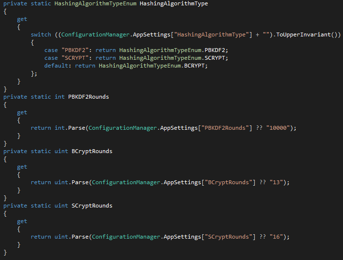

ASP.NET 4.5 MVC5 Custom Identity With Stronger Password Storaging
ASP.NET 4.5 MVC 5 was released a few months ago and it brought a load of new features, one of them being ASP.NET Identity which is the replacement of the former Simple Membership and Membership before that.
If you create a basic MVC 5 application you will get a project with a basic implementation of this Identity that makes calls to a UserManager object to deal with authentication. This object then communicates with a UserStore object that deals with the database through a UserContext object.
Microsoft made it really easy and this will get you through most of the basic things you may want to do, but as always, we don't want the default implementations, we want to make customizations. Therefore I developed a custom Identity implementation with the specific goal of customizing the way passwords are dealt with.
By default, ASP.NET hashes passwords using 5000 rounds of the PBKDF2 (Password-Based Key Derivation Function 2), which is a key stretching algorithm and they used a class named Rfc2898DeriveBytes that has a HMACSHA256 hashing algorithm which is not considered to be very secure anymore.
In my implementation I used a modded implementation of Rfc2898DeriveBytes by Ian Harris, that uses the way more secure HMACSHA512 hashing algorithm and also added the possibility of setting the number of rounds, which is way more secure and lasting. In the future, as computer power evolves, you can increase the number of rounds for an increased security.
Besides PBKDF2 I also integrated BCrypt by Damien Miller and SCrypt by Colin Percival which are widely more accepted as more secure hashing algorithms.
First of all I created a new MVC5 project that gave me all the basic AccountController methods.
After that I started by creating my custom Identity provider so I replaced the UserManager with a tmUserManager that implements an ItmUserManager with all the basic methods shown below.

This is the object to have on the AccountController replacing the current implementation. I have also added IoC that has nothing to do with my point what so ever but it just looks nice.
Before

After

After this I implemented my own UserStore to which I called tmUserStore running a tmIdentityUser. This tmUserStore also has a tmUserContext object to communicate with a SQL database through a tmDbContext.

Now for the fun part!
I implemented a mechanism to let you use different Hashing Algorithms that let's you easily add and configure how you want them to behave. The project already has ready to use: BCrypt; SCrypt; PBKDF2;
So, how does it work?
I have a static class HashingConfig with two public static methods:
- public static string HashPassword(string password)
- public static bool VerifyPassword(string password, string hash)
The configurations of these algorithms can be done via the Web.config in the appSettings section and in this example, SCrypt is enabled and it is set for 2^16 rounds, all the others are commented.

The values you set here, will then be used when you call the Hashing function on the HashingConfig class that has the following method of extracting the settings defined.

Theses settings are then used when you call for a HashPassword or VerifyPassword.
Usage of HashPassword: Simply call it and send the password to hash.

Usage of VerifyPassword: Simply call it and send the password to hash and the previously stored hashed representation of it.

As you can read on my comments, if you want to add another algorithm, create another case with your implementation and create a class that handles the communication with your algorithm class such as this example for BCrypt below.

So that leaves me with a nice tree view like the image below where I have put all the back implementation of the hashing algorithms into their respective folders.

So that is it!